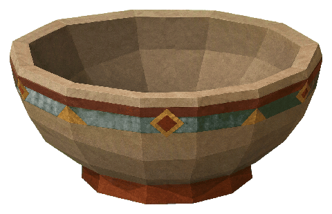
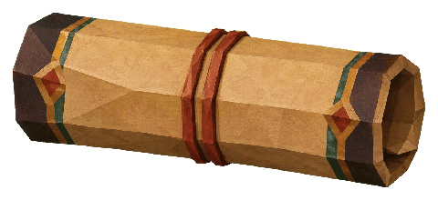
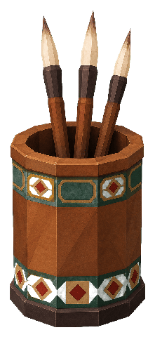
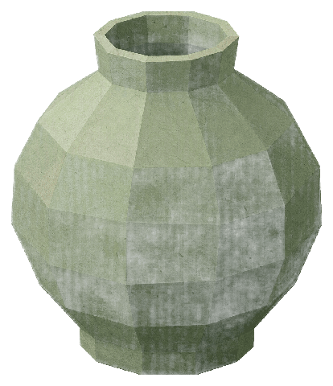
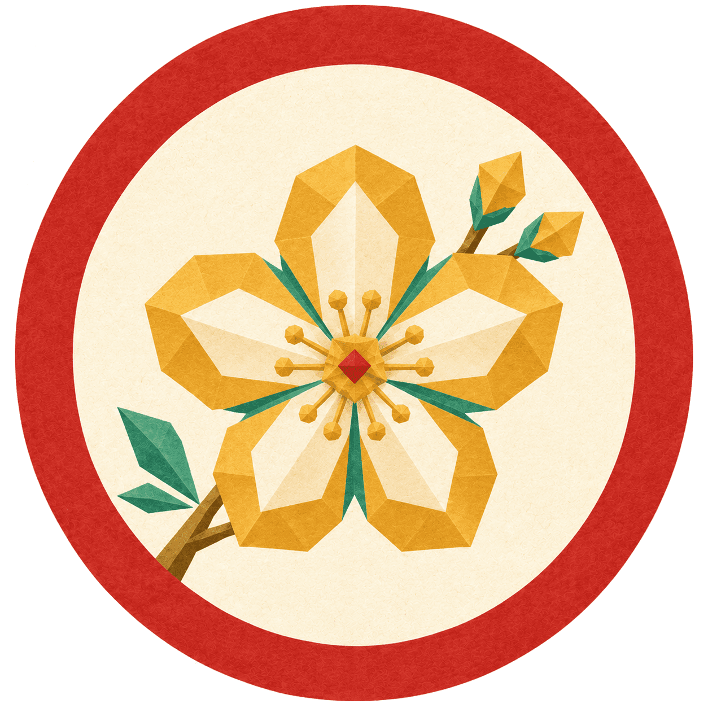
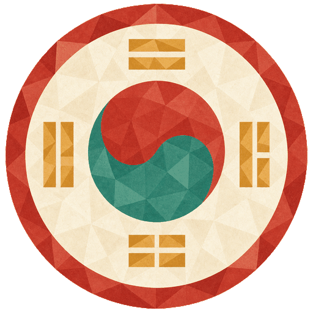

<title>살아있는 책가도</title>
<link rel="preconnect" href="https://fonts.googleapis.com">
<link rel="stylesheet" href="https://fonts.googleapis.com/css2?family=Nanum+Myeongjo:wght@700;800&family=Noto+Sans+KR:wght@400;500;700&family=JetBrains+Mono:wght@400;500&display=swap">
<style>
/* ───────── tokens (document chrome) ───────── */
:root{
  --bg:#FAF6EC; --surface:#FFFDF6; --surface-2:#F4E8D0; --ink:#1A1F1D; --muted:#5C6660; --line:#E3D8C2;
  --accent:#B94B32; --teal:#5F9A93; --primary:#1F7A6B; --gold:#DFA951;
  --wood:#8E6646; --wood-lip:#A87F55; --wood-shadow:#5C4028; --case:#3E2B1B;
  --board:#EFE3CB;
  --font-display:'Nanum Myeongjo',"Apple SD Gothic Neo",serif;
  --font-body:'Noto Sans KR',Pretendard,"Apple SD Gothic Neo",system-ui,sans-serif;
  --font-mono:'JetBrains Mono',ui-monospace,Menlo,monospace;
}
@media (prefers-color-scheme: dark){
  :root:not([data-theme="light"]){
    --bg:#0E1A18; --surface:#152420; --surface-2:#1C2C27; --ink:#EDE6D6; --muted:#A6AFA9; --line:#2A3A35; --board:#13201C;
  }
}
:root[data-theme="dark"]{
  --bg:#0E1A18; --surface:#152420; --surface-2:#1C2C27; --ink:#EDE6D6; --muted:#A6AFA9; --line:#2A3A35; --board:#13201C;
}
*{box-sizing:border-box}
body{margin:0;background:var(--bg);color:var(--ink);font-family:var(--font-body);font-size:16px;line-height:1.7;-webkit-font-smoothing:antialiased}
a{color:var(--primary)}
.wrap{max-width:1180px;margin:0 auto;padding:0 24px}
.col{max-width:72ch}
h1,h2,h3{font-family:var(--font-display);letter-spacing:-.01em;text-wrap:balance;line-height:1.25;margin:0}
h1{font-size:clamp(34px,5vw,54px);font-weight:800}
h2{font-size:clamp(24px,3vw,32px);font-weight:800;margin-top:72px;margin-bottom:14px}
h3{font-size:19px;font-weight:700;margin-top:28px;margin-bottom:6px;font-family:var(--font-body)}
p{margin:0 0 14px}
.eyebrow{font-family:var(--font-mono);font-size:12px;letter-spacing:.12em;text-transform:uppercase;color:var(--muted)}
.lede{font-size:19px;line-height:1.65;color:var(--ink)}
.meta{color:var(--muted);font-size:14px}
.hero{padding:64px 0 28px;border-bottom:1px solid var(--line)}
.hero .row{display:flex;gap:40px;align-items:flex-end;flex-wrap:wrap}
.hero .kicker{font-family:var(--font-mono);font-size:13px;color:var(--muted);display:flex;gap:18px;flex-wrap:wrap;margin-top:18px}
.verdict{display:grid;grid-template-columns:repeat(auto-fit,minmax(250px,1fr));gap:14px;margin:26px 0 0}
.verdict div{background:var(--surface);border-top:3px solid var(--accent);padding:14px 16px;font-size:14.5px;line-height:1.55}
.verdict div b{display:block;font-size:15.5px;margin-bottom:4px}
.verdict div:nth-child(2){border-top-color:var(--teal)}
.verdict div:nth-child(3){border-top-color:var(--primary)}
ul.crit{padding-left:0;list-style:none;margin:10px 0 0;display:grid;gap:12px}
ul.crit li{display:grid;grid-template-columns:34px 1fr;gap:12px;align-items:start;font-size:15.5px}
ul.crit li .tag{font-family:var(--font-mono);font-size:12px;font-weight:500;color:#FAF6EC;background:var(--accent);height:24px;line-height:24px;text-align:center;border-radius:3px;margin-top:3px}
ul.crit li .tag.ok{background:var(--teal)}
ul.crit li b{font-weight:700}
.twocol{display:grid;grid-template-columns:1fr 1fr;gap:28px}
@media (max-width:820px){.twocol{grid-template-columns:1fr}}
.spec{font-family:var(--font-mono);font-size:12.5px;color:var(--muted)}
code{font-family:var(--font-mono);font-size:.9em;background:var(--surface-2);padding:1px 5px;border-radius:3px}
table{border-collapse:collapse;width:100%;font-size:14px}
th,td{text-align:left;padding:9px 10px;border-bottom:1px solid var(--line);vertical-align:top}
th{font-weight:700;color:var(--muted);font-size:12.5px;letter-spacing:.04em}
.tablewrap{overflow-x:auto}
.swatches{display:flex;gap:8px;flex-wrap:wrap;margin:10px 0 0}
.sw{width:92px;font-family:var(--font-mono);font-size:11px;color:var(--muted)}
.sw i{display:block;height:44px;border-radius:3px;margin-bottom:4px}
.note{background:var(--surface-2);padding:14px 18px;border-left:3px solid var(--teal);font-size:14.5px;margin:16px 0}

/* ───────── pin-board plates ───────── */
.board{background:var(--board);padding:36px 0 44px;margin-top:30px;border-top:1px solid var(--line);border-bottom:1px solid var(--line)}
.plates{display:flex;gap:34px;flex-wrap:wrap;align-items:flex-start;justify-content:center}
.plate{display:flex;flex-direction:column;gap:10px;align-items:center}
.plate .cap{font-size:13px;color:var(--muted);max-width:300px;text-align:center;line-height:1.5}
.plate .cap b{color:var(--ink)}

/* ───────── phone frame (app light theme — single-world, painted explicitly) ───────── */
.phone{width:300px;height:640px;background:#FAF6EC;border-radius:34px;box-shadow:0 18px 50px rgba(26,31,29,.28),0 0 0 7px #1A1F1D,0 0 0 8px #3a3a3a;overflow:hidden;position:relative;color:#1A1F1D;font-family:var(--font-body)}
.phone *{box-sizing:border-box}
.phone .sb{height:24px;display:flex;justify-content:space-between;align-items:center;padding:0 18px;font-size:10.5px;font-weight:500;color:#1A1F1D}
.phone .ab{display:flex;align-items:center;gap:10px;padding:6px 14px 4px;font-size:18px;font-weight:700}
.phone .ab .chev{width:10px;height:10px;border-left:2.5px solid #1A1F1D;border-bottom:2.5px solid #1A1F1D;transform:rotate(45deg);margin-left:4px;margin-right:2px}
.phone .ab .sub{margin-left:auto;font-size:10.5px;font-weight:500;color:#5C6660}
.phone .grain{position:absolute;inset:0;pointer-events:none;opacity:.55;mix-blend-mode:multiply;background-image:url("data:image/svg+xml;utf8,%3Csvg xmlns='http://www.w3.org/2000/svg' width='220' height='220'%3E%3Cfilter id='n'%3E%3CfeTurbulence type='fractalNoise' baseFrequency='0.85' numOctaves='2' stitchTiles='stitch'/%3E%3CfeColorMatrix values='0 0 0 0 0.25 0 0 0 0 0.18 0 0 0 0 0.10 0 0 0 0.16 0'/%3E%3C/filter%3E%3Crect width='100%25' height='100%25' filter='url(%23n)'/%3E%3C/svg%3E")}
/* cabinet */
.cab{margin:6px 10px 0;position:relative}
.crown{background:linear-gradient(180deg,#5C4028 0 22%,#8E6646 22% 70%,#3E2B1B 70% 100%);height:26px;border-radius:10px 10px 0 0;position:relative;overflow:hidden}
.crown:before{content:"";position:absolute;left:0;right:0;top:5px;height:7px;background:repeating-linear-gradient(90deg,#B94B32 0 9px,#F4E8D0 9px 11px,#5F9A93 11px 20px,#F4E8D0 20px 22px,#DFA951 22px 27px,#F4E8D0 27px 29px)}
.crown:after{content:"";position:absolute;left:-2px;right:0;top:4px;height:1.5px;background:rgba(185,75,50,.35)} /* riso mis-registration */
.magpie{position:absolute;right:8px;top:-30px;width:46px;filter:drop-shadow(0 2px 1px rgba(26,31,29,.35))}
.levels{display:flex;gap:6px;align-items:flex-end;padding:8px 10px 0;background:#3E2B1B;overflow:hidden}
.lv{font-size:10px;font-weight:500;padding:3px 7px 2px;border-radius:2px 2px 0 0;color:#E8DCC2;background:#5C4028;transform:rotate(-.6deg);white-space:nowrap;line-height:1.2}
.lv.on{background:#F4E8D0;color:#1A1F1D;font-weight:700;padding:5px 9px 3px;font-size:10.5px;transform:rotate(.4deg);box-shadow:0 -1px 0 rgba(185,75,50,.6)}
.lv.on i{display:inline-block;width:7px;height:7px;background:#B94B32;border-radius:1px;margin-right:5px;transform:rotate(8deg);vertical-align:0}
.lv small{display:block;font-size:8px;font-weight:400;opacity:.8}
.case{background:#3E2B1B;padding:0 0 6px;display:flex}
.pillar{width:11px;background:linear-gradient(90deg,#A87F55 0 28%,#8E6646 28% 70%,#5C4028 70% 100%);flex:none}
.pillar.r{background:linear-gradient(90deg,#5C4028 0 30%,#8E6646 30% 72%,#A87F55 72% 100%)}
.floor{flex:1;padding:0 5px}
.plank{height:9px;margin:0 -5px;background:linear-gradient(180deg,#A87F55 0 30%,#8E6646 30% 74%,#5C4028 74% 100%);position:relative}
.plank.sk1{transform:skewY(-.5deg)}.plank.sk2{transform:skewY(.45deg)}
.plank:after{content:"";position:absolute;left:3px;right:3px;top:-1px;height:1px;background:rgba(185,75,50,.28)}
.row{display:grid;grid-template-columns:1fr 1fr;gap:5px;padding:5px 0 0}
.cell{height:106px;background:#F4E8D0 center/cover no-repeat;position:relative;box-shadow:inset 0 12px 12px -10px rgba(42,28,16,.7),inset 0 -6px 8px -8px rgba(42,28,16,.4);clip-path:polygon(0 0,100% 0,100% calc(100% - 2px),calc(100% - 3px) 100%,0 100%)}
.cell.wide{grid-column:1 / -1;height:118px;background-position:center 40%}
.cell.empty{background-color:#EADDC2}
.cell.empty img{position:absolute;right:10px;bottom:6px;height:44px}
.tagl{position:absolute;left:-2px;top:6px;max-width:calc(100% - 8px);background:#FAF6EC;color:#1A1F1D;font-size:8.6px;font-weight:700;line-height:1.15;padding:3px 6px 3px 7px;transform:rotate(-1.2deg);box-shadow:1px 1px 0 rgba(92,64,40,.35);white-space:nowrap;overflow:hidden;text-overflow:ellipsis}
.tagl:before{content:"";position:absolute;left:0;top:0;bottom:0;width:2px;background:#B94B32}
.cell.empty .tagl{color:#5C6660;font-weight:500}
.cnt{position:absolute;right:5px;bottom:5px;font-family:var(--font-mono);font-size:9px;font-weight:500;color:#1A1F1D;background:rgba(250,246,236,.92);padding:1px 5px;transform:rotate(.8deg)}
.cnt.done{background:#B94B32;color:#FAF6EC}
.cnt.zero{color:#5C6660;background:transparent;font-family:var(--font-body);font-size:8.5px}
.brush{position:absolute;left:6px;right:38px;bottom:7px;height:3px;background:rgba(26,31,29,.12);border-radius:2px}
.brush i{display:block;height:100%;background:#1F7A6B;border-radius:2px 3px 2px 1px;transform:rotate(-.4deg)}
.stamp{position:absolute;left:6px;bottom:12px;width:36px;transform:rotate(-9deg);opacity:.93;filter:drop-shadow(0 1px 0 rgba(0,0,0,.1))}
/* drawers (other levels) */
.drawers{margin:10px 10px 0}
.drawers .h{font-size:10.5px;color:#5C6660;margin:0 2px 5px;display:flex;justify-content:space-between}
.drawer{display:flex;align-items:center;gap:10px;height:34px;margin-bottom:4px;padding:0 10px 0 8px;background:linear-gradient(180deg,#A87F55 0 18%,#8E6646 18% 82%,#5C4028 82% 100%);position:relative;border-radius:2px}
.drawer .lab{background:#F4E8D0;color:#1A1F1D;font-size:9.5px;font-weight:700;padding:2px 7px;transform:rotate(-.8deg)}
.drawer .n{font-size:9.5px;color:#E8DCC2;font-weight:500}
.drawer .n small{opacity:.8;font-weight:400}
.drawer .pull{margin-left:auto;width:16px;height:8px;border-radius:4px;background:linear-gradient(180deg,#E8BC6A,#B98A34);box-shadow:0 1px 0 rgba(0,0,0,.35)}
.drawer.dim{opacity:.78}
.bottom{position:absolute;left:0;right:0;bottom:0;height:54px;background:#FAF6EC;border-top:1px solid #E3D8C2;display:flex;justify-content:space-around;align-items:center;font-size:8.5px;color:#5C6660}
.bottom b{color:#1F7A6B}
/* scroll sheet */
.dim-bg{position:absolute;inset:0;background:rgba(26,31,29,.42)}
.sheet{position:absolute;left:0;right:0;bottom:0;top:78px;display:flex;flex-direction:column}
.rod{height:16px;background:linear-gradient(180deg,#7A5636 0 30%,#3E2B1B 30% 62%,#5C4028 62% 100%);position:relative;margin:0 -6px;z-index:2}
.rod:before,.rod:after{content:"";position:absolute;top:-3px;width:18px;height:22px;border-radius:4px;background:linear-gradient(180deg,#E8BC6A,#B98A34)}
.rod:before{left:-4px}.rod:after{right:-4px}
.paper{flex:1;background:#F4E8D0;margin:0 10px;position:relative;overflow:hidden;box-shadow:inset 0 10px 14px -10px rgba(42,28,16,.55)}
.paper .art{height:118px;background:center 42%/cover no-repeat;clip-path:polygon(0 0,100% 0,100% 88%,94% 96%,86% 90%,78% 99%,70% 91%,62% 97%,54% 90%,46% 98%,38% 92%,30% 99%,22% 91%,14% 97%,6% 92%,0 98%)}
.paper .ttl{padding:10px 14px 2px;font-size:16px;font-weight:700;line-height:1.2}
.paper .sub{padding:0 14px 8px;font-size:10px;color:#5C6660}
.li{display:grid;grid-template-columns:22px 1fr auto;gap:10px;align-items:center;padding:8px 14px;border-top:1px solid rgba(92,64,40,.14)}
.li .seal{width:20px;height:20px;background:#E3D3B1;color:#1A1F1D;font-family:var(--font-mono);font-size:10px;font-weight:500;display:grid;place-items:center;transform:rotate(-4deg);border-radius:2px}
.li.done .seal{background:#B94B32;color:#FAF6EC}
.li .t{font-size:12px;font-weight:700;line-height:1.2}
.li .m{font-size:9.5px;color:#5C6660;font-weight:400}
.li .dur{font-family:var(--font-mono);font-size:9.5px;color:#5C6660}
.li.next{background:rgba(31,122,107,.08)}
.li.next .seal{background:#1F7A6B;color:#FAF6EC}
.paper .foot{position:absolute;left:0;right:0;bottom:0;padding:6px 14px;font-size:9.5px;color:#5C6660;background:linear-gradient(180deg,rgba(244,232,208,0),#F4E8D0 40%)}
/* old (before) schematic */
.before{width:300px;height:270px;background:#3E2B1B;padding:10px 12px;display:grid;grid-template-columns:1fr 1fr;gap:8px;border-radius:6px}
.before .c{background:#F4E8D0;position:relative;padding:8px}
.before .pill{background:#FAF6EC;border:1px solid #E3D8C2;border-radius:4px;font-size:9px;padding:3px 6px;color:#1A1F1D;white-space:nowrap;overflow:hidden;text-overflow:ellipsis}
.before .spines{position:absolute;left:8px;bottom:10px;display:flex;gap:3px;align-items:flex-end}
.before .spines i{display:block;width:12px;background:#7A5A3A;position:relative}
.before .spines i:after{content:"";position:absolute;left:4px;bottom:4px;width:4px;height:4px;background:#B94B32}
.before .prop{position:absolute;right:8px;bottom:8px;height:34px}
/* anatomy */
.anat{display:grid;grid-template-columns:320px 1fr;gap:30px;align-items:start}
@media (max-width:820px){.anat{grid-template-columns:1fr}}
.zoom{width:320px;background:#3E2B1B;padding:8px 0}
.zoom .cell{height:200px}
.zoom .tagl{font-size:13px;padding:5px 9px 5px 11px;top:10px;left:-3px}
.zoom .cnt{font-size:13px;right:8px;bottom:8px;padding:2px 8px}
.zoom .brush{height:5px;left:10px;right:62px;bottom:11px}
.zoom .stamp{width:58px;left:10px;bottom:18px}
.zoom .plank{height:14px}
.callouts{display:grid;gap:10px;font-size:14.5px}
.callouts div{display:grid;grid-template-columns:26px 1fr;gap:10px}
.callouts span{font-family:var(--font-mono);font-size:12px;color:var(--accent);font-weight:500;padding-top:3px}
/* share cards */
.shares{display:grid;grid-template-columns:repeat(auto-fit,minmax(220px,1fr));gap:26px;align-items:start}
.card{background:#F4E8D0;position:relative;overflow:hidden;color:#1A1F1D;box-shadow:0 10px 26px rgba(26,31,29,.22);font-family:var(--font-body)}
.card .g{position:absolute;inset:0;pointer-events:none;opacity:.5;mix-blend-mode:multiply;background-image:url("data:image/svg+xml;utf8,%3Csvg xmlns='http://www.w3.org/2000/svg' width='220' height='220'%3E%3Cfilter id='n'%3E%3CfeTurbulence type='fractalNoise' baseFrequency='0.85' numOctaves='2' stitchTiles='stitch'/%3E%3CfeColorMatrix values='0 0 0 0 0.25 0 0 0 0 0.18 0 0 0 0 0.10 0 0 0 0.16 0'/%3E%3C/filter%3E%3Crect width='100%25' height='100%25' filter='url(%23n)'/%3E%3C/svg%3E")}
.card.s916{aspect-ratio:9/16}.card.s45{aspect-ratio:4/5}.card.s11{aspect-ratio:1/1}
.tri{position:absolute;width:0;height:0}
.tri.tr{right:0;top:0;border-top:70px solid #B94B32;border-left:70px solid transparent}
.tri.bl{left:0;bottom:0;border-bottom:56px solid #5F9A93;border-right:56px solid transparent}
.tri.br{right:0;bottom:0;border-bottom:64px solid #5F9A93;border-left:64px solid transparent}
.tri.tl{left:0;top:0;border-top:48px solid #B94B32;border-right:48px solid transparent}
.dots{position:absolute;display:grid;grid-template-columns:repeat(3,6px);gap:4px}
.dots i{width:6px;height:6px;border-radius:50%;background:#DFA951}
.dots i:nth-child(1){background:#B94B32}.dots i:nth-child(5){background:#5F9A93}.dots i:nth-child(9){background:#5F9A93}
.ko{font-weight:700;line-height:1.2;letter-spacing:-.01em;word-break:keep-all}
.gl{font-weight:500;color:#5C6660;line-height:1.4}
.seal{font-weight:700;color:#FAF6EC;background:#B94B32;display:grid;place-items:center;transform:rotate(-6deg);border-radius:2px}
.site{position:absolute;bottom:12px;left:0;right:0;text-align:center;font-family:var(--font-mono);font-size:9px;color:#5C6660;letter-spacing:.06em}
.card .rodx{position:absolute;left:-6px;right:-6px;height:12px;background:linear-gradient(180deg,#7A5636 0 30%,#3E2B1B 30% 62%,#5C4028 62% 100%)}
.card .rodx:before,.card .rodx:after{content:"";position:absolute;top:-2px;width:14px;height:16px;border-radius:3px;background:linear-gradient(180deg,#E8BC6A,#B98A34)}
.card .rodx:before{left:-2px}.card .rodx:after{right:-2px}
.card .plk{position:absolute;left:0;right:0;height:26px;background:linear-gradient(180deg,#A87F55 0 26%,#8E6646 26% 74%,#5C4028 74% 100%)}
.arcs{position:absolute;width:90px;height:90px}
.arcs i{position:absolute;inset:0;border-radius:50%;border:5px solid transparent;border-left-color:#5F9A93}
.arcs i:nth-child(2){inset:14px;border-width:4px}.arcs i:nth-child(3){inset:28px;border-width:4px}
.torn{clip-path:polygon(2% 0,97% 1%,100% 6%,98% 30%,100% 55%,97% 80%,100% 96%,94% 100%,70% 98%,40% 100%,10% 98%,0 94%,2% 70%,0 40%,2% 12%)}
.scap{font-size:13px;color:var(--muted);line-height:1.5;margin-top:10px}
.scap b{color:var(--ink);display:block;font-size:14px}
.scap .k{font-family:var(--font-mono);font-size:11px;color:var(--teal)}
.stampgrid{display:grid;grid-template-columns:repeat(4,1fr);gap:8px}
.stampgrid i{aspect-ratio:1;background:#E3D3B1;border-radius:2px;display:block;transform:rotate(-3deg)}
.stampgrid img{width:100%;transform:rotate(-5deg)}
.footer{padding:40px 0 70px;color:var(--muted);font-size:13px;border-top:1px solid var(--line);margin-top:70px}
@media (prefers-reduced-motion: no-preference){
  .lv.on{animation:settle .6s ease-out}
  @keyframes settle{from{transform:translateY(3px) rotate(.4deg);opacity:.6}to{transform:translateY(0) rotate(.4deg);opacity:1}}
}
</style>

<section class="hero"><div class="wrap">
  <div class="row">
    <div class="col">
      <div class="eyebrow">Hangul Sori · Hören · Design Review &amp; Direction · 2026-08-19</div>
      <h1 style="margin-top:10px">살아있는 책가도</h1>
      <p class="lede" style="margin-top:16px">지금의 Hören은 <em>책가도</em>라는 아주 좋은 은유를 <b>장난감 해상도</b>로 그려 놓은 상태다. 책등은 색종이 막대, 칸은 똑같은 2열 격자, 두루마리는 흰 다이얼로그 위아래에 붙은 못 두 개다. 은유는 살리고 해상도만 올린다 — <b>칸 하나하나가 작은 민화 정물</b>이 되고, 내 레벨 층이 먼저 열리고, 칸을 누르면 나무 널판 밑에서 한지 두루마리가 세로로 풀린다.</p>
      <div class="kicker"><span>기준 origin/main 6fad2bab</span><span>스타일 Faceted Minhwa + 리소 거칠기</span><span>앱 코드 무변경 · 목업/문서만</span></div>
    </div>
  </div>
  <div class="verdict">
    <div><b>무엇이 틀렸나</b>한 화면에 세 개의 시각 언어(수채 히어로 · 장난감 책장 · Material 다이얼로그). 정보(진행·재고)는 안 보이고 장식(책등 개수)만 많다.</div>
    <div><b>무엇을 지키나</b>책가도 은유, 15칸×6레벨 데이터 계약, 이미 그려 둔 듣기 카드 50장과 목재·소품 8장, 한지·면분할·외곽선 0.</div>
    <div><b>무엇이 바뀌나</b>카드 아트가 <em>칸의 내부</em>가 된다. 층(레벨) 선택은 장식이 아니라 가구의 일부. 두루마리는 진짜 두루마리. 거칠기는 후처리가 아니라 소재(어긋난 판·손으로 자른 널판·먹 붓선)에서.</div>
  </div>
</div></section>

<section class="wrap">
  <h2>1. 비평 — 수석 디자이너의 눈으로</h2>
  <div class="twocol">
    <div>
      <ul class="crit">
        <li><span class="tag">01</span><div><b>은유의 해상도가 낮다.</b> 책가도는 역원근·쌓인 기하·굵은 색면의 정물화다 — 우리 스타일(면분할 민화) 그 자체인데, 구현은 같은 크기 책등 5개 + 빨간 점 + 소품 1개를 모든 칸에 복붙했다. 100px에서 모든 칸이 똑같이 읽힌다 = 아무것도 안 읽힌다.</div></li>
        <li><span class="tag">02</span><div><b>정보와 장식이 뒤바뀌었다.</b> 책등 개수=시나리오 수는 누구도 세지 않는다. 정작 필요한 <em>내가 어디까지 들었나</em>는 라벨 밑 1px 선이라 안 보인다. 재고 0칸(C1/C2·Social)은 책 한두 권에 소품 하나라 고장처럼 보인다.</div></li>
        <li><span class="tag">03</span><div><b>위계가 거꾸로다.</b> 10:3 수채풍 히어로(스타일도 다르다) → 부제 → "먼저 고르세요" 메타 → h3 → 칩 → 책장. 유일한 과제(주제 고르기)가 폰에서 폴드 아래에 있다.</div></li>
        <li><span class="tag">04</span><div><b>레벨 필터가 "내 것"을 말하지 않는다.</b> A1~C2 칩 여섯 개가 동급 탭처럼 보인다. 사용자는 <em>자기 층</em>을 먼저 보고, 나머지는 닫힌 서랍으로 닿고 싶어 한다.</div></li>
        <li><span class="tag">05</span><div><b>두루마리가 두루마리가 아니다.</b> 가운데 뜬 흰 Material 다이얼로그에 나무 못 두 개. 세계가 깨진다(어두운 나무 책장 위에 흰 앱 시트). 리스트는 기본 ListTile.</div></li>
        <li><span class="tag">06</span><div><b>라벨이 잘린다.</b> "Erster Besuch bei der Partnerfa…" — 칸 안의 알약 라벨은 공간도 없고 탭 어포던스도 없다. 짧은 카드용 이름(ARB 별도 키)이 필요하다(8/17 인수인계 §7-4 미결).</div></li>
        <li><span class="tag ok">OK</span><div><b>살릴 것.</b> 책가도 2단 구조(칸→두루마리), 레벨×15칸 데이터, `ScenarioLoader.loadLevel`, 목재·소품 8장, 듣기 카드 50장(두루마리 헤더로 재사용 결정 8/18), `SoriIllustratedCard`의 errorBuilder 계약.</div></li>
      </ul>
    </div>
    <div>
      <div class="plate" style="align-items:flex-start">
        <div class="before">
          <div class="c"><div class="pill">Ich hab's nicht verstanden</div><div class="spines"><i style="height:70px"></i><i style="height:62px"></i><i style="height:74px;background:#B94B32"></i><i style="height:66px;background:#4E6B63"></i><i style="height:60px"></i></div></div>
          <div class="c"><div class="pill">Apotheke, Wetter &amp; Sicherheit</div><div class="spines"><i style="height:70px"></i><i style="height:62px"></i><i style="height:74px;background:#B94B32"></i><i style="height:66px;background:#4E6B63"></i><i style="height:60px"></i></div></div>
          <div class="c"><div class="pill">Dating &amp; Beziehung</div><div class="spines"><i style="height:70px"></i></div></div>
          <div class="c"><div class="pill">Fandom &amp; Videos</div><div class="spines"><i style="height:70px"></i><i style="height:62px"></i></div></div>
        </div>
        <div class="cap" style="text-align:left"><b>지금(실기기 스크린샷의 구조를 CSS로 재현).</b> 색면은 맞는데 <em>소재</em>가 없다 — 그레인도, 어긋남도, 손자국도, 주제도 없다. 같은 책 다섯 권이 열다섯 번 반복된다.</div>
      </div>
      <h3>한 문장 처방</h3>
      <p>책장을 <b>그리지</b> 말고 책가도를 <b>짓는다</b>. 칸은 이미 있는 카드 아트(주제 정물)로 채우고, 나무는 세 톤 면 + 0.5° 어긋난 널판 + 리소 빨간 판 어긋남으로, 진행은 먹 붓선과 도장으로, 레벨은 층(서랍)으로.</p>
    </div>
  </div>
</section>

<section class="wrap">
  <h2>2. 방향 — "살아있는 책가도"의 다섯 규칙</h2>
  <div class="twocol">
    <div>
      <h3>① 칸 = 정물 한 점</h3>
      <p>칸 내부는 듣기 카드 아트 그대로(`assets/illustrations/listening/{Key}.webp`, 아이보리 `#F4E8D0` 바닥 + 적·청 모서리 삼각 = 다이아몬드 면). 카드 아트의 모서리 삼각이 칸 안에서 <em>보석 컷</em>처럼 읽힌다. 새 아트를 그릴 필요 없이 50장이 즉시 살아난다. 재고 0칸은 더 어두운 한지(`#EADDC2`) 위에 소품 하나 + "bald" 꼬리표.</p>
      <h3>② 나무는 면 세 톤, 판은 조금 어긋나게</h3>
      <p>널판=`#A87F55/#8E6646/#5C4028` 하드엣지 3면, 행마다 ±0.5° skew, 위에 1px 적 `#B94B32` 28% 어긋남 선(리소 2판). 그레인은 전체에 multiply 한 겹. "완벽한 평행선 금지"가 거칠기의 실체다.</p>
      <h3>③ 진행은 붓선과 도장</h3>
      <p>바 대신 칸 바닥에 녹청 먹 붓선(길이=진행률, 끝이 살짝 삐침). 칸 완료 = 석간주 도장(이미 있는 `stamps/stamp_*.png`) 좌하단에 찍힘 + 카운트 칩이 적으로 바뀜. 숫자는 `3/9`(재고 기준, 8/17 §7-2 기본값).</p>
    </div>
    <div>
      <h3>④ 레벨은 층(層) — 내 층이 열려 있다</h3>
      <p>크라운(장 윗머리)에 한지 꼬리표로 레벨이 걸린다. 내 레벨만 아이보리 꼬리표+도장으로 "열린 층", 나머지는 나무색 작은 꼬리표. 열린 층 아래에는 다른 레벨이 <b>닫힌 서랍</b>(놋쇠 손잡이)으로 줄지어 있고, 당기면 그 층이 열린다. 알약 필터 없이도 "내 것 먼저, 나머지는 손 닿는 곳"이 가구 문법으로 해결된다.</p>
      <h3>⑤ 두루마리는 널판 밑에서 풀린다</h3>
      <p>중앙 다이얼로그 폐기. 바텀시트가 위쪽 축(軸)+놋쇠 마개를 달고 화면 폭 전체로 내려온다. 헤더는 카드 아트를 <em>찢은 한지</em> 가장자리로 자르고, 항목 번호는 작은 도장(한 것=적, 다음 것=녹청, 안 한 것=한지색). 세계가 한 번도 끊기지 않는다.</p>
      <div class="note">히어로: 10:3 수채 까치 배너는 이 화면에서 <b>내린다</b>(스타일 이질 + 30% 점유). 까치는 크라운 위에 앉히는 작은 컷아웃으로만 남긴다. 되돌리고 싶으면 커밋 하나로 복구되도록 분리.</div>
    </div>
  </div>
  <div class="swatches">
    <div class="sw"><i style="background:#F4E8D0"></i>#F4E8D0 한지</div>
    <div class="sw"><i style="background:#EADDC2"></i>#EADDC2 빈 칸</div>
    <div class="sw"><i style="background:#A87F55"></i>#A87F55 널판 빛</div>
    <div class="sw"><i style="background:#8E6646"></i>#8E6646 널판</div>
    <div class="sw"><i style="background:#5C4028"></i>#5C4028 그늘</div>
    <div class="sw"><i style="background:#3E2B1B"></i>#3E2B1B 장 안쪽</div>
    <div class="sw"><i style="background:#B94B32"></i>#B94B32 적·도장</div>
    <div class="sw"><i style="background:#5F9A93"></i>#5F9A93 탁한 청</div>
    <div class="sw"><i style="background:#1F7A6B"></i>#1F7A6B 붓선/CTA</div>
    <div class="sw"><i style="background:#DFA951"></i>#DFA951 놋쇠만</div>
  </div>
  <p class="spec" style="margin-top:8px">전부 `shelf_case.dart`·`scroll_sheet.dart`·`LISTENING_CARD_ART_SPEC` 실측값. 새 색 0개.</p>
</section>

<section class="board"><div class="wrap">
  <div class="eyebrow" style="margin-bottom:18px">3. 목업 — Hören (Android 실기기 비율, 앱 라이트 테마)</div>
  <div class="plates">

    <!-- PHONE 1: top of Hören -->
    <div class="plate">
      <div class="phone">
        <div class="grain"></div>
        <div class="sb"><span>10:54</span><span>▲▲ 100</span></div>
        <div class="ab"><span class="chev"></span>Hören<span class="sub">A1 · 12 Themen bestückt</span></div>
        <div class="cab">
          
          <div class="crown"></div>
          <div class="levels">
            <span class="lv on"><i></i>A1 · Mein Regal</span>
            <span class="lv">A2<small>15</small></span><span class="lv">B1<small>15</small></span><span class="lv">B2<small>15</small></span><span class="lv">C1<small>12</small></span><span class="lv">C2<small>12</small></span>
          </div>
          <div class="case">
            <div class="pillar"></div>
            <div class="floor">
              <div class="row">
                <div class="cell wide" style="background-image:url('../../assets/illustrations/listening/A1Greeting.webp')"><span class="tagl">Begrüßung &amp; Anrede</span><div class="brush"><i style="width:38%"></i></div><span class="cnt">3/9</span></div>
              </div>
              <div class="plank sk1"></div>
              <div class="row">
                <div class="cell" style="background-image:url('../../assets/illustrations/listening/A1Transit.webp')"><span class="tagl">Einsteigen &amp; aussteigen</span><span class="cnt done">9/9</span></div>
                <div class="cell" style="background-image:url('../../assets/illustrations/listening/A1Arrival.webp')"><span class="tagl">Taxi &amp; Ankunft</span><div class="brush"><i style="width:12%"></i></div><span class="cnt">1/8</span></div>
              </div>
              <div class="plank sk2"></div>
              <div class="row">
                <div class="cell" style="background-image:url('../../assets/illustrations/listening/A1Counter.webp')"><span class="tagl">Läden &amp; Schalter</span><span class="cnt">0/7</span></div>
                <div class="cell" style="background-image:url('../../assets/illustrations/listening/A1Cafe.webp')"><span class="tagl">Café &amp; Imbiss</span><div class="brush"><i style="width:60%"></i></div><span class="cnt">6/10</span></div>
              </div>
              <div class="plank sk1"></div>
              <div class="row">
                <div class="cell" style="background-image:url('../../assets/illustrations/listening/A1Home.webp')"><span class="tagl">Zuhause &amp; Haustür</span><span class="cnt">0/6</span></div>
                <div class="cell" style="background-image:url('../../assets/illustrations/listening/A1Repair.webp')"><span class="tagl">Nicht verstanden</span><span class="cnt">0/6</span></div>
              </div>
              <div class="plank sk2"></div>
            </div>
            <div class="pillar r"></div>
          </div>
        </div>
        <div class="bottom"><span>Heute</span><span><b>Lernen</b></span><span>Üben</span><span>Wörter</span><span>Hanok</span></div>
      </div>
      <div class="cap"><b>A. 들어오자마자 내 층.</b> 히어로·부제·h3 없음. 크라운의 꼬리표가 레벨이고, 첫 칸(인사)이 넓은 정물로 연다. 완료 칸은 도장, 진행은 먹 붓선, 숫자는 재고 기준.</div>
    </div>

    <!-- PHONE 2: scrolled to bottom: social + empty + drawers -->
    <div class="plate">
      <div class="phone">
        <div class="grain"></div>
        <div class="sb"><span>10:54</span><span>▲▲ 100</span></div>
        <div class="ab"><span class="chev"></span>Hören<span class="sub">A1 · 12 Themen bestückt</span></div>
        <div class="cab" style="margin-top:0">
          <div class="case" style="border-radius:0">
            <div class="pillar"></div>
            <div class="floor">
              <div class="row">
                <div class="cell" style="background-image:url('../../assets/illustrations/listening/A1Numbers.webp')"><span class="tagl">Zahlen &amp; Uhrzeit</span><span class="cnt">0/4</span></div>
                <div class="cell" style="background-image:url('../../assets/illustrations/listening/A1Wayfinding.webp')"><span class="tagl">Wege &amp; Schilder</span><div class="brush"><i style="width:25%"></i></div><span class="cnt">1/4</span></div>
              </div>
              <div class="plank sk1"></div>
              <div class="row">
                <div class="cell" style="background-image:url('../../assets/illustrations/listening/SocialFriends.webp')"><span class="tagl">Freunde &amp; Zocken</span><span class="cnt">0/2</span></div>
                <div class="cell empty"><span class="tagl">Dating &amp; Beziehung</span><span class="cnt zero">bald · 0</span></div>
              </div>
              <div class="plank sk2"></div>
            </div>
            <div class="pillar r"></div>
          </div>
          <div style="height:8px;background:linear-gradient(180deg,#5C4028,#3E2B1B);margin:0;border-radius:0 0 8px 8px"></div>
        </div>
        <div class="drawers">
          <div class="h"><span>Weitere Regale</span><span>ziehen zum Öffnen</span></div>
          <div class="drawer"><span class="lab">A2</span><span class="n">15 Themen <small>· 66 Szenarien</small></span><span class="pull"></span></div>
          <div class="drawer"><span class="lab">B1</span><span class="n">15 Themen <small>· 55</small></span><span class="pull"></span></div>
          <div class="drawer"><span class="lab">B2</span><span class="n">15 Themen <small>· 54</small></span><span class="pull"></span></div>
          <div class="drawer dim"><span class="lab">C1</span><span class="n">12 Themen <small>· 39</small></span><span class="pull"></span></div>
          <div class="drawer dim"><span class="lab">C2</span><span class="n">12 Themen <small>· 35</small></span><span class="pull"></span></div>
        </div>
        <div class="bottom"><span>Heute</span><span><b>Lernen</b></span><span>Üben</span><span>Wörter</span><span>Hanok</span></div>
      </div>
      <div class="cap"><b>B. 아래로 내리면 다른 층은 닫힌 서랍.</b> 레벨 이름이 한지 라벨, 놋쇠 손잡이가 유일한 황(黃). 재고 0칸은 어두운 한지 + 소품 + "bald". 서랍을 당기면 그 층이 위에서 열리고 크라운 꼬리표가 바뀐다.</div>
    </div>

    <!-- PHONE 3: scroll sheet -->
    <div class="plate">
      <div class="phone">
        <div class="grain"></div>
        <div class="sb"><span>10:55</span><span>▲▲ 100</span></div>
        <div class="ab"><span class="chev"></span>Hören</div>
        <div class="dim-bg"></div>
        <div class="sheet">
          <div class="rod"></div>
          <div class="paper">
            <div class="art" style="background-image:url('../../assets/illustrations/listening/A1Health.webp')"></div>
            <div class="ttl">Apotheke, Wetter &amp; Sicherheit</div>
            <div class="sub">6 Szenarien · 2 gehört · Regal A1 · Fach 8 von 15</div>
            <div class="li done"><span class="seal">1</span><div><div class="t">Anmeldung in der Klinik</div><div class="m">6 Zeilen · gehört</div></div><span class="dur">0:41</span></div>
            <div class="li done"><span class="seal">2</span><div><div class="t">Salbenregal</div><div class="m">8 Zeilen · gehört</div></div><span class="dur">0:55</span></div>
            <div class="li next"><span class="seal">3</span><div><div class="t">Überzieher mitnehmen</div><div class="m">8 Zeilen · als Nächstes</div></div><span class="dur">0:52</span></div>
            <div class="li"><span class="seal">4</span><div><div class="t">Feinstaubmaske</div><div class="m">8 Zeilen</div></div><span class="dur">0:58</span></div>
            <div class="li"><span class="seal">5</span><div><div class="t">Regenjacke</div><div class="m">8 Zeilen</div></div><span class="dur">0:50</span></div>
            <div class="li"><span class="seal">6</span><div><div class="t">Notruf 119</div><div class="m">6 Zeilen</div></div><span class="dur">0:39</span></div>
            <div class="foot">▾ weiter ausrollen</div>
          </div>
          <div class="rod" style="margin-top:0"></div>
        </div>
      </div>
      <div class="cap"><b>C. 칸을 누르면 두루마리.</b> 위아래 축(軸)+놋쇠 마개, 한지 위에 찢은 가장자리의 카드 아트, 번호는 도장(적=들음, 녹청=다음, 한지색=아직). 다이얼로그 아님 — 화면 폭 전체를 쓰는 바텀시트.</div>
    </div>
  </div>
</div></section>

<section class="wrap">
  <h2>4. 칸의 해부 — 구현자가 그대로 옮길 사양</h2>
  <div class="anat">
    <div class="zoom">
      <div class="plank sk1" style="margin:0"></div>
      <div style="padding:6px 8px 0">
        <div class="cell" style="background-image:url('../../assets/illustrations/listening/A1Cafe.webp')"><span class="tagl">Café &amp; Imbiss</span><div class="brush"><i style="width:100%"></i></div><span class="cnt done">10/10</span></div>
      </div>
      <div class="plank sk2" style="margin:6px 0 0"></div>
    </div>
    <div class="callouts">
      <div><span>a</span><div><b>내부</b> = 카드 아트 `BoxFit.cover`, 세로 중앙 정렬(아트 세이프 12~88%). 아트 없으면 `#F4E8D0` + 소품. `errorBuilder` 필수(자산 0장이어도 뜬다).</div></div>
      <div><span>b</span><div><b>깊이</b> = 칸 상단 내부 그림자(`inset 0 12 12 -10 rgba(42,28,16,.7)`) — 널판이 위를 덮는 느낌. 우하단 모서리 3px 깎음(손으로 자른 한지).</div></div>
      <div><span>c</span><div><b>꼬리표</b> = 크림 `#FAF6EC` 위 먹 `w700 12.5sp`, 좌측 2px 석간주, −1.2° 회전, 널판에 걸치게 2px 위로. 텍스트 1줄 + ellipsis → <b>짧은 카드명 ARB 키 필요</b> (`listeningShelfShort{Key}`).</div></div>
      <div><span>d</span><div><b>붓선</b> = 칸 바닥 3~4dp 녹청 `#1F7A6B`, 길이=진행률, 끝 1dp 삐침(rotate −.4°). 0%면 안 그린다. 바 트랙은 먹 12%.</div></div>
      <div><span>e</span><div><b>도장</b> = 완료 시 `stamps/stamp_*.png` 36~40dp, −9°, 좌하단. motif는 칸 slug 해시로 고정(같은 칸은 늘 같은 도장). 찍히는 순간 180ms scale pop(`reduceMotion` 게이트).</div></div>
      <div><span>f</span><div><b>카운트 칩</b> = tabular `meta 12.5` `n/재고`; 완료면 적 배경+크림 글자. 0/0은 "bald · 0"으로 먹-muted.</div></div>
      <div><span>g</span><div><b>널판</b> = 9dp, 3면(`#A87F55 30% · #8E6646 44% · #5C4028 26%`), 행마다 skewY ±0.5°, 윗변 1px 적 28% 어긋남. 기둥 11dp 3면. 장 안쪽 `#3E2B1B`. 전부 `CustomPainter`로 — PNG 타일(`chaekgado_plank.png`)은 폴백.</div></div>
      <div><span>h</span><div><b>그레인</b> = 화면 전체 1겹 multiply(`hanji_texture.dart` 재사용), 칸 안엔 추가 안 함(카드 아트에 이미 있음).</div></div>
    </div>
  </div>
</section>

<section class="wrap">
  <h2>5. 공유 이미지 — 한 렌더러, 여섯 얼굴</h2>
  <p class="col">인스타에서 퍼지는 건 "예쁜 앱 스크린샷"이 아니라 <b>① 나를 말해 주는 것 ② 저장해 두고 싶은 것 ③ 웃기거나 찔리는 것 ④ 자랑 ⑤ 답을 맞히고 싶은 것</b>이다. 두루마리(안 A, 잠금)는 그 중 ①②만 맡는다. 나머지를 같은 한지·면분할·도장 DNA로 다섯 얼굴 더 만든다 — 렌더러 하나(`ShareSlip(variant:, ratio:)`), 색 0개 추가, 외곽선 0, 앱 크롬 0.</p>
  <div class="shares">

    <div><div class="card s916" style="background:#F4E8D0"><div class="g"></div>
      <div class="rodx" style="top:6%"></div>
      <div class="plk" style="top:0"></div>
      <div style="position:absolute;left:10%;right:10%;top:34%;text-align:center">
        <div class="ko" style="font-size:30px">오랜만이에요</div>
        <div class="gl" style="font-size:12px;margin-top:10px">Lange nicht gesehen.</div>
      </div>
      <div class="seal" style="position:absolute;right:14%;bottom:17%;width:30px;height:30px;font-size:14px">한</div>
      <div class="rodx" style="bottom:6%"></div><div class="plk" style="bottom:0"></div>
      <div class="site">hangul-sori.com</div>
    </div>
    <div class="scap"><b>A · 두루마리 <span class="k">9:16 · 잠금(5229be29)</span></b>한 줄 + 뜻 + 도장. 1:1 크롭(세로 22–78%)에도 뜻이 산다. 트리거: 뒷면을 연 직후 / 좋아요 직후.</div></div>

    <div><div class="card s45"><div class="g"></div>
      <div class="tri tr"></div><div class="tri bl"></div>
      <div class="dots" style="left:16px;top:18px"><i></i><i></i><i></i><i></i><i></i><i></i><i></i><i></i><i></i></div>
      <div style="position:absolute;left:10%;right:10%;top:18%">
        <div class="gl" style="font-size:10px;letter-spacing:.08em;text-transform:uppercase;color:#B94B32;font-weight:700">Ein Wort, das es auf Deutsch nicht gibt</div>
        <div class="ko" style="font-size:64px;margin-top:8px;letter-spacing:-.03em">눈치</div>
        <div class="gl" style="font-size:12px;margin-top:6px"><b style="color:#1A1F1D">nunchi</b> — die Kunst, den Raum zu lesen, bevor jemand etwas sagt.</div>
      </div>
      <div class="seal" style="position:absolute;left:10%;bottom:12%;width:26px;height:26px;font-size:12px">한</div>
      <div class="site">hangul-sori.com</div>
    </div>
    <div class="scap"><b>B · 눈치 카드 <span class="k">4:5 · 신규</span></b>번역 안 되는 말(눈치·정·한·멍·답정너). 바이럴 1순위 — 공유가 곧 자기소개. 트리거: 단어망/뉘앙스 화면, 주 1회 편집 픽.</div></div>

    <div><div class="card s11 torn" style="background:#FAF6EC"><div class="g"></div>
      <div style="position:absolute;left:12%;right:12%;top:20%">
        <div class="ko" style="font-size:34px">괜찮아요</div>
        <div class="gl" style="font-size:9.5px;margin-top:4px;font-family:var(--font-mono);color:#5F9A93">Adj. · gwaen-cha-na-yo</div>
        <div class="gl" style="font-size:12px;margin-top:10px;color:#1A1F1D">Das ist okay. / Schon gut.</div>
        <div class="gl" style="font-size:11px;margin-top:12px;border-top:1px solid rgba(92,64,40,.25);padding-top:8px">늦어도 괜찮아요.<br><span style="color:#5C6660">Es ist okay, auch wenn du zu spät kommst.</span></div>
      </div>
      <div class="seal" style="position:absolute;right:12%;bottom:14%;width:28px;height:28px;font-size:13px">한</div>
      <div class="site">hangul-sori.com</div>
    </div>
    <div class="scap"><b>C · 시조 쪽지 <span class="k">1:1 · 바이블 안 C</span></b>찢은 한지, 단어+품사+예문 1줄. 왓츠앱/DM에서 읽힌다. "저장해 두는" 카드. 트리거: 단어장 보관(책갈피) 직후.</div></div>

    <div><div class="card s916"><div class="g"></div>
      <div class="tri tl"></div><div class="tri br"></div>
      <div class="arcs" style="right:-30px;top:22%"><i></i><i></i><i></i></div>
      <div style="position:absolute;left:10%;right:10%;top:30%">
        <div class="gl" style="font-size:10px;letter-spacing:.08em;text-transform:uppercase;color:#5F9A93;font-weight:700">Was heißt das?</div>
        <div class="ko" style="font-size:26px;margin-top:8px">지하철역이<br>어디예요?</div>
        <div class="gl" style="font-size:10.5px;margin-top:26px;color:#5C6660">Antwort in der nächsten Story ↓<br>oder: antworte mir 👀</div>
      </div>
      <div class="seal" style="position:absolute;left:10%;bottom:13%;width:26px;height:26px;font-size:12px">한</div>
      <div class="site">hangul-sori.com</div>
    </div>
    <div class="scap"><b>D · Rätsel <span class="k">9:16 · 2장 세트</span></b>문제 장 + 정답 장(두루마리 A 재사용). 스토리 답장을 부른다. 청 동심호 = "들어오는 말"(아트 스펙 규약). 트리거: 듣기 한 줄 완료 후 "Freunde testen".</div></div>

    <div><div class="card s11"><div class="g"></div>
      <div class="tri tr"></div>
      <div style="position:absolute;left:10%;right:10%;top:12%">
        <div class="gl" style="font-size:10px;letter-spacing:.08em;text-transform:uppercase;color:#B94B32;font-weight:700">7 Tage in Folge</div>
        <div class="ko" style="font-size:22px;margin-top:4px">도장첩 · Jin</div>
        <div class="stampgrid" style="margin-top:14px">
          
          <i></i>
        </div>
        <div class="gl" style="font-size:10.5px;margin-top:12px">A1 · 43 Szenarien gehört · 118 Wörter</div>
      </div>
      <div class="site">hangul-sori.com</div>
    </div>
    <div class="scap"><b>E · 도장첩 <span class="k">1:1 · 자랑</span></b>스트릭/레벨업. 황(黃)은 여기서도 안 쓴다 — 도장이 보상. 트리거: 스트릭 7·30·100, 레벨 승급, Gye 주간목표 달성.</div></div>

    <div><div class="card s916"><div class="g"></div>
      <div style="position:absolute;left:0;right:0;top:0;height:38%;background:url('../../assets/illustrations/listening/A1Transit.webp') center 45%/cover;clip-path:polygon(0 0,100% 0,100% 90%,92% 97%,84% 91%,76% 99%,68% 92%,60% 98%,52% 91%,44% 99%,36% 92%,28% 98%,20% 91%,12% 99%,4% 93%,0 98%)"></div>
      <div style="position:absolute;left:10%;right:10%;top:44%">
        <div class="gl" style="font-size:9.5px;letter-spacing:.08em;text-transform:uppercase;color:#5F9A93;font-weight:700">Heute gehört · A1 · Einsteigen &amp; aussteigen</div>
        <div class="ko" style="font-size:22px;margin-top:8px">이번 역에서<br>내리세요.</div>
        <div class="gl" style="font-size:11px;margin-top:8px">Steigen Sie an dieser Station aus.</div>
      </div>
      <div class="arcs" style="left:-40px;bottom:8%;width:80px;height:80px;transform:scaleX(-1)"><i></i><i></i><i></i></div>
      <div class="seal" style="position:absolute;right:10%;bottom:13%;width:28px;height:28px;font-size:13px">한</div>
      <div class="site">hangul-sori.com</div>
    </div>
    <div class="scap"><b>F · 듣기 한 줄 <span class="k">9:16 · Hören 전용</span></b>칸의 카드 아트를 찢은 가장자리로 머리에. 책가도 세계가 공유 이미지까지 이어진다. 트리거: 듣기 플레이어에서 한 줄 길게 누름 → "Teilen".</div></div>
  </div>
  <div class="note" style="margin-top:26px">공통 계약: 한지 `#F4E8D0`/`#FAF6EC` + 그레인, 한국어 Pretendard w700 92–120px@1080, 뜻 36–40px, 푸터 `hangul-sori.com` 32px 먹-muted, 도장 석간주, 적·청 삼각은 <b>최대 2개</b>, 점군 최대 2군집(바이블 §1.4-5), 텍스트는 9:16 기준 세로 22–78% 안(1:1 크롭 보존). 캡션 텍스트 페이로드 없음(이미지가 메시지). 다크모드 공유 이미지는 만들지 않는다(한지는 낮).</div>
</section>

<section class="wrap">
  <h2>6. 에셋이 더 필요한가 — 거의 아니다</h2>
  <div class="tablewrap"><table>
    <tr><th>자산</th><th>있음</th><th>이번 설계에서의 쓰임</th><th>추가 제작</th></tr>
    <tr><td>듣기 카드 아트</td><td>50장 (A1 12 · A2 12 · B1 12 · B2 12 · C1 1 · Social 3)</td><td>칸 내부 + 두루마리 헤더 + 공유 F 머리</td><td>C1 11 · C2 12 = 23장 (4크레딧/장, `LISTENING_CARD_ART_SPEC` 레시피 그대로, 소재만)</td></tr>
    <tr><td>목재·소품</td><td>8장</td><td>소품 4 = 빈 칸 전용. 목재 4 = CustomPainter 폴백</td><td>없음</td></tr>
    <tr><td>도장</td><td>12장</td><td>칸 완료 + 공유 E</td><td>없음</td></tr>
    <tr><td>까치 컷아웃</td><td>`mascot/magpie_perched.png`</td><td>크라운 위</td><td>없음 (선택: 갓 쓴 까치 앉은 자세 1장, 그린스크린 컷)</td></tr>
    <tr><td>히어로 `listening_hero.png`</td><td>1장 (수채풍)</td><td><b>이 화면에서 제거</b> — 스타일 이질</td><td>—</td></tr>
  </table></div>
  <p class="col" style="margin-top:14px">거칠기 규약(8/18 결정 유지): <b>후처리(`apply_riso_v2.py`)가 아니라 생성 프롬프트에서</b> — "hand-pulled risograph, ink pooling at plane edges, slight plate misregistration, hanji fibres visible inside planes, matte". 코드 쪽 거칠기는 위 §4의 skew·어긋남 선·찢은 가장자리·회전 꼬리표로 얻는다. 둘 다 AI 평면을 깨는 같은 원리다.</p>
</section>

<section class="footer"><div class="wrap">
  인수인계 본문: <code>docs/HANDOFF_HOEREN_REDESIGN_2026-08-19.md</code> · 이 목업 소스: <code>docs/mockups/hoeren_redesign_2026-08-19.html</code>(저장소 상대경로 이미지) · 앱 코드 변경 0 · 브랜치 <code>claude/hoeren-redesign-mockups-20260819</code>
</div></section>
